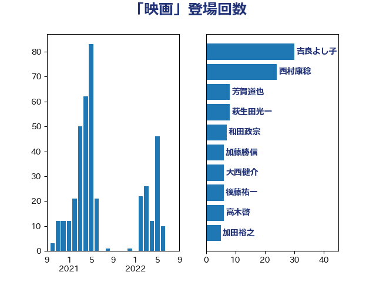

単語「映画」

| 吉良よし子 | 日本共産党 | 30 回 |
| 西村康稔 | 自由民主党 | 24 回 |
| 芳賀道也 | 国民民主党 | 8 回 |
| 萩生田光一 | 自由民主党 | 8 回 |
| 和田政宗 | 自由民主党 | 7 回 |
| 加藤勝信 | 自由民主党 | 6 回 |
| 大西健介 | 立憲民主党 | 6 回 |
| 後藤祐一 | 立憲民主党 | 6 回 |
| 高木啓 | 自由民主党 | 6 回 |
| 加田裕之 | 自由民主党 | 5 回 |
| 嘉田由紀子 | 無所属 | 4 回 |
| 山下貴司 | 自由民主党 | 4 回 |
| 杉本和巳 | 日本維新の会 | 4 回 |
| 松野博一 | 自由民主党 | 4 回 |
| 福島みずほ | 社会民主党 | 4 回 |
| 荒井優 | 立憲民主党 | 4 回 |
| 伊藤孝江 | 公明党 | 3 回 |
| 宮本徹 | 日本共産党 | 3 回 |
| 小熊慎司 | 立憲民主党 | 3 回 |
| 山添拓 | 日本共産党 | 3 回 |
| 志位和夫 | 日本共産党 | 3 回 |
| 柚木道義 | 立憲民主党 | 3 回 |
| 武井俊輔 | 自由民主党 | 3 回 |
| 福山哲郎 | 立憲民主党 | 3 回 |
| 茂木敏充 | 自由民主党 | 3 回 |
| 蓮舫 | 立憲民主党 | 3 回 |
| 足立康史 | 日本維新の会 | 3 回 |
| 青山繁晴 | 自由民主党 | 3 回 |
| 中谷一馬 | 立憲民主党 | 2 回 |
| 吉田統彦 | 立憲民主党 | 2 回 |
| 山田宏 | 自由民主党 | 2 回 |
| 平沢勝栄 | 自由民主党 | 2 回 |
| 末松義規 | 立憲民主党 | 2 回 |
| 杉田水脈 | 自由民主党 | 2 回 |
| 江島潔 | 自由民主党 | 2 回 |
| 河西宏一 | 公明党 | 2 回 |
| 浮島智子 | 公明党 | 2 回 |
| 牧義夫 | 立憲民主党 | 2 回 |
| 菅義偉 | 自由民主党 | 2 回 |
| 赤澤亮正 | 自由民主党 | 2 回 |
| 金子恭之 | 自由民主党 | 2 回 |
| 音喜多駿 | 日本維新の会 | 2 回 |
| 須藤元気 | 無所属 | 2 回 |
| 高橋光男 | 公明党 | 2 回 |
| 一谷勇一郎 | 日本維新の会 | 1 回 |
| 三木亨 | 自由民主党 | 1 回 |
| 中島克仁 | 立憲民主党 | 1 回 |
| 串田誠一 | 日本維新の会 | 1 回 |
| 伊藤孝恵 | 国民民主党 | 1 回 |
| 和田有一朗 | 日本維新の会 | 1 回 |
| 堤かなめ | 立憲民主党 | 1 回 |
| 大塚耕平 | 国民民主党 | 1 回 |
| 宮路拓馬 | 自由民主党 | 1 回 |
| 小池晃 | 日本共産党 | 1 回 |
| 小野泰輔 | 日本維新の会 | 1 回 |
| 山田賢司 | 自由民主党 | 1 回 |
| 岩本剛人 | 自由民主党 | 1 回 |
| 岩渕友 | 日本共産党 | 1 回 |
| 市村浩一郎 | 日本維新の会 | 1 回 |
| 平井卓也 | 自由民主党 | 1 回 |
| 斎藤嘉隆 | 立憲民主党 | 1 回 |
| 日下正喜 | 公明党 | 1 回 |
| 末松信介 | 自由民主党 | 1 回 |
| 東徹 | 日本維新の会 | 1 回 |
| 林芳正 | 自由民主党 | 1 回 |
| 枝野幸男 | 立憲民主党 | 1 回 |
| 柴田巧 | 日本維新の会 | 1 回 |
| 横沢高徳 | 立憲民主党 | 1 回 |
| 泉健太 | 立憲民主党 | 1 回 |
| 浅田均 | 日本維新の会 | 1 回 |
| 浜田聡 | NHK党 | 1 回 |
| 玉木雄一郎 | 国民民主党 | 1 回 |
| 田中健 | 国民民主党 | 1 回 |
| 田野瀬太道 | 無所属 | 1 回 |
| 石井苗子 | 日本維新の会 | 1 回 |
| 石川大我 | 立憲民主党 | 1 回 |
| 秋野公造 | 公明党 | 1 回 |
| 稲富修二 | 立憲民主党 | 1 回 |
| 緑川貴士 | 立憲民主党 | 1 回 |
| 若松謙維 | 公明党 | 1 回 |
| 豊田俊郎 | 自由民主党 | 1 回 |
| 赤羽一嘉 | 公明党 | 1 回 |
| 逢坂誠二 | 立憲民主党 | 1 回 |
| 道下大樹 | 立憲民主党 | 1 回 |
| 鈴木義弘 | 国民民主党 | 1 回 |
| 長妻昭 | 立憲民主党 | 1 回 |
| 青木愛 | 立憲民主党 | 1 回 |